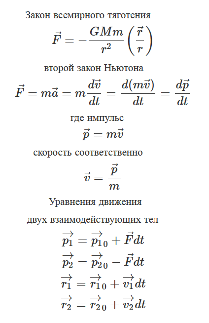
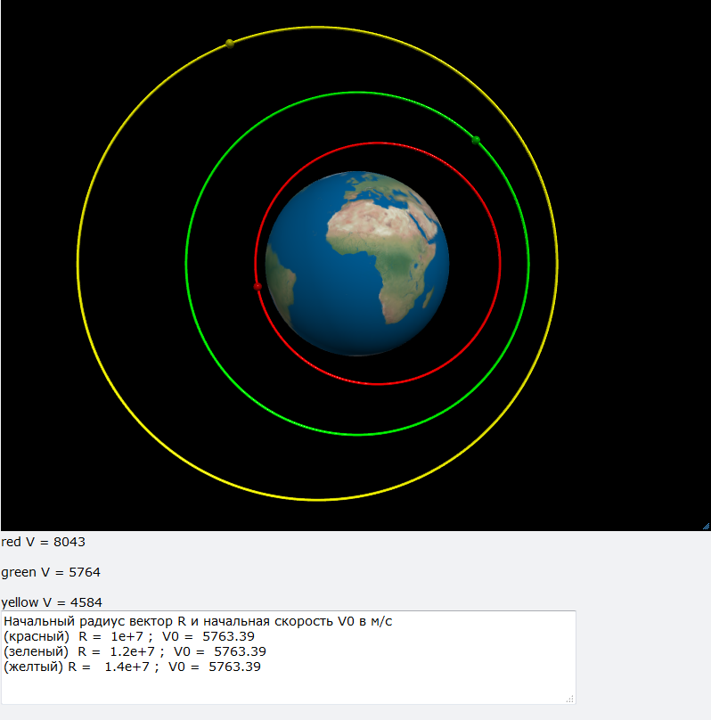
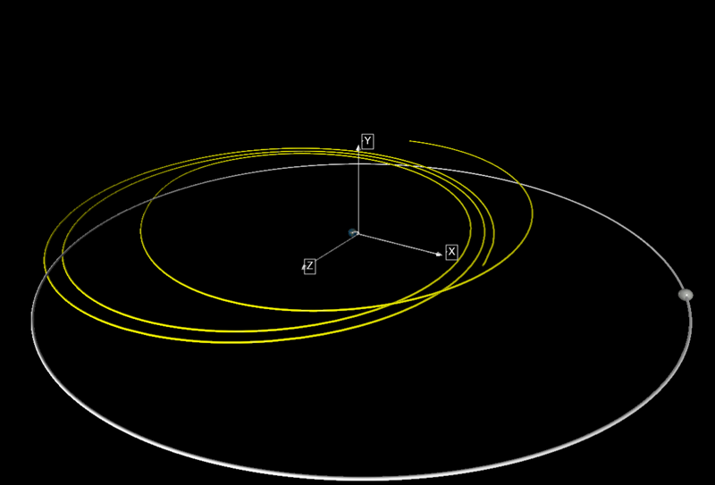
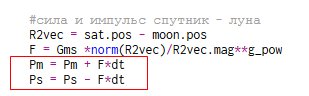

Данный сайт посвящен развенчанию "теории" лжефизика Виктора Катющика Наши друзья: http://torgopt.com.mastertest.ru
В статье Гравитационное взаимодействие, основы космологии на странице 20 рассматривается вопрос возможности существования орбит на прямом тяготении, на основе Закона всемирного тяготения. При этом формулируется такая задача:
Рассмотрим силы, приложенные к спутнику.
С единичным смещением запустим спутник на более низкую орбиту (масса
- const, линейная скорость const).
рассмотриваются графики сил и делается вывод:
Из данных графиков однозначно следует, что еслибы действительно наблюдаемая картина мира была построена на законе тяготения (по версии
притяжения), то ни какой планетарности не было бы в принципе.(приращение силы направлено строго в противоположную сторону от требуемого ). Тело на таких приращениях силы удерживаться в планетарном режиме не может, и при любом отличном от нуля смещении должно покинуть орбиту (причем не только исходную, но и все остальныетеоретически предполагаемые).
То есть по факту - по версии прямого тяготения, удержать тело на орбите –
не возможно. Нет сил обеспечивающих данное явление. Более того, приращения силы делают планетарность по версии прямого притяжения невозможной в принципе.
Данный вывод неверен и ошибочен по причинам:
Видим, что ускорение спутника не зависит от его массы причем при m<<M полностью определяется планетой, которая неподвижна. (Закон Галилея о падении тел).
На рисунке зеленая орбита круговая, желтая и красная эллипсы, с начальным смещением по радиусу относительно круговой +- 2000км, начальные скорости у всех одинаковы и равны круговой. Орбиты плоские и замкнуты. Требование масса спутника = const - лишнее, требование линейная скорость = const при изменяющемся радиусе а соответственно действующей силе безосновательно и противоречит как наблюдениям, так и теории.
Программа с исходным кодом: http://www.glowscript.org/#/user/Mex/folder/Public/program/orbit1
В общем случае нужно учитывать взаимное влияние тел друг на друга. От скоростей и ускорения перейдем к импульсам и силам
При каждой итерации вычисляется взаимное расстояние R, действующая сила F по ЗВТ, и импульсы Р1 и Р2 от 1 тела на 2 и от 2 на 1 с обратным знаком.
Программа с исходником: http://www.glowscript.org/#/user/Mex/folder/Public/program/ZVT3 Пример модели трех взаимодействующих тел. Орбиты не Кеплеровы, не замкнуты, и не плоские. Однако это уже совсем другой вопрос.
Вывод, планетарные системы (орбиты) на тяготении по ЗВТ, обоснованы аналитически, численно и согласуются с наблюдениями. Утверждения автора о "невозможности в принципе планетарности по версии прямого тяготения" безосновательны и ошибочны а определения на стр.18 - 19 "планетарного равновесия" интеллектуально не состоятельны.